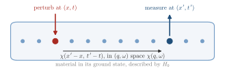

Page 1 of 15 of this session
9.1 Response functions as a probe of the ground state
If we perturb a material at one place and at one time, what does the signal at another place and time tell us about its ground state? We will now see that the relation between the two is contained in a response function, which is a property of the unperturbed material. In a clean material whose Hamiltonian does not change in time, it depends only on \(x'-x\) and \(t'-t\), so each wavevector and frequency \((q,\omega)\) responds alone.
Let us first set up the general experiment, since it will come back in every example of this session. We take a quantum material with a ground state that we understand, or that we think we understand, and we make a small perturbation at position \(x\) and time \(t\). Then we measure some observable at a different position \(x'\) and at a different time \(t'\), which is typically later. The relation between what we did at \((x,t)\) and what we observe at \((x',t')\) is contained in a response function. Once we know that function completely, we know how the material reacts to a perturbation applied at any place and at any time. We built a first version of this idea in Section 3.2, and in Section 3.4 linear response gave the Hall conductivity. In this session we use it for every class of material of the course.

This point of view does not depend on the observable that we choose, and the same formalism describes the following cases.
A perturbation in the local electrostatic potential, measured as a change in the local charge density, which gives the dielectric function.
A local magnetic moment or field, measured as a change in the local magnetization at another place, which gives the magnetic susceptibility, also called the spin-fluctuation response.
A local change of temperature, measured as a change of temperature at another place, which gives the thermal diffusivity, the thermal conductivity divided by the heat capacity per unit volume.
There are also two quite different ways to do this experiment in the lab, and we will use both in this session. The first way is a real physical perturbation. If we replace one atom of a metal by an atom of a different element, we have created a real, localized impurity. As we will see in detail in Section 9.6, the Friedel oscillations that appear in the electronic density show us directly the Fermi surface of the material.
In the second way, the measurement itself is the perturbation. We send a neutron, whose magnetic moment couples to the local moments of a magnetic material. The scattering cross-section that we record then gives directly the magnetic fluctuations of the material, and this is called inelastic neutron scattering. These two experiments look very different, but the formalism behind them, and the kind of information that we obtain, is the same in both cases.
Finally, a simplification makes almost everything below possible to compute. When the unperturbed Hamiltonian has translational symmetry in space and does not depend on time, the response function can only depend on \(x'-x\) and \(t'-t\), and not on \(x,t,x',t'\) separately. In this situation the natural language is to Fourier transform to reciprocal space and frequency, \((q,\omega)\), and this is the language that we will use for almost all the rest of this session.
To first order in a perturbation \(f(x,t)\), a material that is clean and does not change in time gives the response
\[\delta A(x',t')=\int dx\,dt\;\chi(x'-x,\,t'-t)\,f(x,t),\]
which after a Fourier transform becomes
\[\delta A(q,\omega)=\chi(q,\omega)\,f(q,\omega).\]
With translational symmetry in space and in time, a perturbation at one \((q,\omega)\) gives a response at the same \((q,\omega)\) only. In a crystal, which has only the translations of its lattice, a perturbation at \(q\) can also give a response at \(q+G\), with \(G\) a reciprocal lattice vector.
The steps From a response in real space to one in (q, omega)
The simplest case is a static response on a chain, where a perturbation \(f(n)\) on the sites gives
\[\delta A(n')=\sum_n\chi(n'-n)\,f(n).\]
We take a perturbation with one wavevector, \(f(n)=e^{iqn}\), and we write \(m=n'-n\). The sum becomes
\[\delta A(n')=\sum_m\chi(m)\,e^{iq(n'-m)}=\Big(\sum_m\chi(m)\,e^{-iqm}\Big)\,e^{iqn'}=\chi(q)\,e^{iqn'},\]
meaning that the response has the same wavevector \(q\) as the perturbation, with the amplitude \(\chi(q)\). A general perturbation is a sum of such waves, \(f(n)=\int\frac{dq}{2\pi}\,f(q)\,e^{iqn}\) with \(q\) in the Brillouin zone, and each wave responds alone, so that \(\delta A(q)=\chi(q)\,f(q)\). The sum over \(n\) is what is called a convolution, and the Fourier transform turns it into a product.
In time the same steps with \(e^{-i\omega t}\) give \(\delta A(q,\omega)=\chi(q,\omega)\,f(q,\omega)\), as long as \(\chi\) depends only on \(t'-t\). Near a wall or an impurity \(\chi\) depends on \(n\) and \(n'\) separately, and we cannot pull out the factor \(e^{iqn'}\), so a perturbation at \(q\) also gives a response at other wavevectors.
A perturbation \(f(x)\) on an infinite clean chain gives the response
\[\delta A(x')=\sum_x\chi(x,x')\,f(x).\]
We move the perturbation and the measurement by ten sites, and nothing changes. What does this tell us about \(\chi\)?
Show the answers
- A. ✗ False
This is false. A response that depends only on \(x'-x\) can still be constant at all distances, which translational symmetry allows. Symmetry alone does not fix the decay.
- B. ✓ True
This is true. Take the pairs \((x,x')=(0,5)\) and \((10,15)\). Both have \(x'-x=5\) and the same response, so \(\chi\) is a function of one variable. A perturbation \(f(x)=e^{iqx}\) then gives \(\delta A(x')=\chi(q)\,e^{iqx'}\), with the same \(q\).
- C. ✗ False
This is false. If \(\chi\) depended on \(x\) and \(x'\) separately, the pairs \((0,5)\) and \((10,15)\) would give different values. This happens near a wall or an impurity, but not in the clean infinite chain.
We lower the onsite energy of site \(x\) by \(\delta\mu\). The density at site \(x'\) changes by \(\chi(x,x')\,\delta\mu\). Each map shows \(\chi(x,x')\) of a ring of 40 sites, in units of \(1/t\). Which ring is clean?
Show the answers
- A. ✗ False
This is false. An onsite energy \(2t\) sits at \(x=20\), and the stripes break on the row and the column of that site. The computed values are \(\chi(20,20)=0.09/t\) on that site and \(0.25/t\) far from it, at \(x=0\). So the response depends on where we perturb, and not only on the distance.
- B. ✓ True
This is true. Each line parallel to the diagonal has one color, so \(\chi(x,x')\) depends only on \(x'-x\). The computed value on the diagonal is \(0.25/t\) on every site.
- C. ✗ False
This is false. Every site has a random onsite energy between \(-1.5t\) and \(1.5t\). The color then changes along the lines next to the diagonal, so two perturbations at the same distance give different responses.
The three rings have the hopping \(t\), the chemical potential \(\mu=0\) at the center of the band and the temperature \(0.05t\). They share one color scale, which ends at \(\pm0.1/t\), so the diagonal is dark red in all three maps. Only in the clean ring is \(\chi\) a function of \(x'-x\) alone, which is what allows us to use one \(\chi(q)\) for each wavevector.
A chain has the static response \(\chi(n)=e^{-|n|/\xi}\) between two sites a distance \(n\) apart. Compute \(\chi(q)=\sum_n\chi(n)\,e^{-iqn}\), and evaluate it for \(\xi=1\) at \(q=0\) and at \(q=\pi\).
Solution
We write \(a=e^{-1/\xi}\). The sum splits into \(n\geq0\) and \(n<0\), which are two geometric series,
\[\chi(q)=\sum_{n\geq0}a^n e^{-iqn}+\sum_{n\geq1}a^n e^{iqn}=\frac{1}{1-ae^{-iq}}+\frac{ae^{iq}}{1-ae^{iq}}=\frac{1-a^2}{1-2a\cos q+a^2}.\]
At \(q=0\) this is \((1+a)/(1-a)=\coth\big(1/(2\xi)\big)\), and at \(q=\pi\) it is \((1-a)/(1+a)=\tanh\big(1/(2\xi)\big)\). For \(\xi=1\) we get \(\chi(0)=\coth(1/2)\approx2.16\) and \(\chi(\pi)=\tanh(1/2)\approx0.46\).
So a response with one length \(\xi\) in real space is a peak at \(q=0\) in reciprocal space. For a long \(\xi\) the peak has the half width \(1/\xi\), since \(\chi(q)\) falls to half of \(\chi(0)\) at about \(q=1/\xi\). A probe of the \(q\) dependence, such as neutron scattering for the magnetic response, reads the length \(\xi\) from the width of this peak.
- In Section 9.3 the response function becomes the first-order coefficient of perturbation theory.
- In Section 9.6 a real impurity is the perturbation, and the Friedel oscillation shows the Fermi surface.
- In Section 10.7 a measured response, such as a neutron-scattering structure factor, is the input from which a network infers the Hamiltonian.